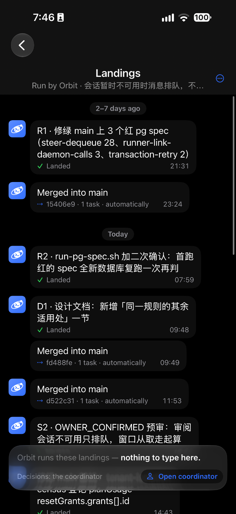

<!doctype html><html lang="zh"><meta charset="utf-8">
<title>Landings 窗口 · UI 优化（2026-11-10）</title>
<style>
/* 2026-11-10 · Landings 窗口 iPhone 优化。自包含；手机内的类带 lc- 前缀，图板的带 b-。
   手机按 owner 的 iPhone：440×956 pt（截图 1320×2868），深色模式。 */
:root { --tint: #3E7BFA; --green: #30D158; --l2: #8D8D93; --mark: #FF7A00; }
* { box-sizing: border-box; }
body { margin: 0; background: #F3F3F6; font-family: -apple-system, "PingFang SC", sans-serif; color: #1c1c1e; -webkit-font-smoothing: antialiased; }
.board { padding: 30px 44px 36px; width: max-content; background: #F3F3F6; }
h1 { font-size: 25px; margin: 0 0 8px; }
.b-lede { margin: 0 0 24px; width: 1380px; font-size: 15px; line-height: 1.7; color: #3a3a40; }
.b-row { display: flex; gap: 46px; align-items: flex-start; }
figure { margin: 0; width: 440px; }
.b-tag { display: inline-block; font-size: 13px; font-weight: 700; border-radius: 7px; padding: 3px 10px; margin-bottom: 12px; }
.b-tag.today { background: #FFE3E0; color: #B42318; } .b-tag.after { background: #DDE7FF; color: #2447B8; }
.b-notes { width: 410px; font-size: 14.5px; line-height: 1.68; color: #2c2c31; padding-top: 34px; }
.b-notes h3 { font-size: 16px; margin: 0 0 8px; }
.b-notes ol { margin: 0 0 18px; padding: 0; list-style: none; }
.b-notes li { margin: 8px 0; position: relative; padding-left: 30px; }
.b-notes li .b-n { position: absolute; left: 0; top: 1px; }
.b-n { display: inline-grid; place-items: center; width: 21px; height: 21px; border-radius: 50%; background: var(--mark); color: #fff; font: 700 12.5px/1 -apple-system, sans-serif; }
.b-pin { position: absolute; z-index: 60; box-shadow: 0 0 0 2px #fff; }
i.en { font-style: italic; }
code { font: 12.5px "JetBrains Mono", monospace; background: rgba(0,0,0,.06); border-radius: 4px; padding: 0 4px; }
.b-ask { background: #FFFBEA; box-shadow: 0 0 0 1.5px #F2CF63; border-radius: 12px; padding: 4px 16px 10px; }
.b-ask ol { margin-bottom: 4px; }
.b-rec { color: #1E7B34; font-weight: 650; }
.b-shot { width: 440px; height: 956px; border-radius: 58px; overflow: hidden; position: relative; box-shadow: 0 0 0 1.5px rgba(0,0,0,.25); }
.b-shot img { width: 440px; display: block; }

/* ── 手机（深色） ── */
.lc-phone { width: 440px; height: 956px; border-radius: 58px; overflow: hidden; position: relative; background: #000; color: #fff; box-shadow: 0 0 0 1.5px rgba(0,0,0,.25); }
.lc-top { position: absolute; top: 0; left: 0; right: 0; height: 120px; background: #161618; z-index: 20; border-bottom: .5px solid rgba(255,255,255,.08); }
.lc-sb { position: absolute; top: 0; left: 0; right: 0; height: 62px; display: flex; justify-content: space-between; align-items: center; padding: 4px 38px 0 62px; }
.lc-time { font-size: 18px; font-weight: 650; }
.lc-sys { display: flex; gap: 7px; align-items: center; fill: #fff; }
.lc-bat { background: #fff; color: #000; border-radius: 7px; font: 700 13px/1 -apple-system, sans-serif; padding: 3px 6px; }
.lc-back { position: absolute; left: 20px; top: 62px; width: 45px; height: 45px; border-radius: 50%; background: #2A2A2D; display: grid; place-items: center; }
.lc-ttl { position: absolute; left: 76px; right: 76px; top: 64px; height: 45px; text-align: center; display: flex; flex-direction: column; justify-content: center; }
.lc-t1 { font-size: 18px; font-weight: 650; line-height: 22px; }
.lc-t2 { font-size: 13.5px; line-height: 17px; color: var(--l2); margin-top: 1px; white-space: nowrap; overflow: hidden; text-overflow: ellipsis; }
.lc-more { position: absolute; right: 20px; top: 62px; width: 45px; height: 45px; border-radius: 50%; background: #2A2A2D; display: grid; place-items: center; }
.lc-home { position: absolute; bottom: 9px; left: 50%; width: 150px; height: 5px; margin-left: -75px; border-radius: 3px; background: #fff; z-index: 30; }
.lc-body { position: absolute; top: 120px; left: 0; right: 0; overflow: hidden; display: flex; flex-direction: column; justify-content: flex-end; padding-bottom: 6px; }
.lc-body > * { flex-shrink: 0; }
.lc-chip { align-self: center; margin: 14px 0 10px; font-size: 13px; font-weight: 650; color: #A0A0A6; background: rgba(118,118,128,.24); border-radius: 11px; padding: 4px 11px; line-height: 16px; }
.lc-col { display: flex; flex-direction: column; gap: 6px; align-items: flex-start; padding: 0 60px 0 16px; margin-bottom: 6px; }
.lc-bub { background: #1E1E21; border-radius: 16px; padding: 9px 13px 8px; max-width: 100%; }
.lc-bub .tx { font-size: 17px; line-height: 22.5px; }
.lc-bub .ft { display: flex; align-items: center; gap: 6px; margin-top: 4px; font-size: 14px; color: var(--l2); line-height: 17px; white-space: nowrap; }
.lc-bub .ft .tm { margin-left: auto; padding-left: 16px; font-variant-numeric: tabular-nums; }
.lc-sys-line { align-self: stretch; display: flex; align-items: center; justify-content: center; gap: 6px; margin: 2px 16px 10px; font-size: 13.5px; color: var(--l2); white-space: nowrap; }
.lc-sys-line b { color: #C9C9CE; font-weight: 600; }
.lc-sys-line .tm { font-variant-numeric: tabular-nums; }
/* 底栏：贴底、不透明、一行 */
.lc-bar { position: absolute; left: 0; right: 0; bottom: 0; height: 92px; background: #161618; border-top: .5px solid rgba(255,255,255,.10); z-index: 20; display: flex; align-items: flex-start; padding: 12px 12px 0 18px; gap: 10px; }
.lc-bar .w { flex: 1; min-width: 0; font-size: 14.5px; color: var(--l2); line-height: 34px; white-space: nowrap; display: flex; align-items: center; gap: 7px; }
.lc-btn { display: inline-flex; align-items: center; gap: 6px; font-size: 15px; font-weight: 600; color: var(--tint); background: rgba(62,123,250,.16); border-radius: 17px; padding: 0 14px; height: 34px; }
</style>
<body>
<script>
const ico = {
  back: '<svg width="22" height="22" viewBox="0 0 24 24" fill="none" stroke="#fff" stroke-width="2.5" stroke-linecap="round" stroke-linejoin="round"><path d="M15 5l-7 7 7 7"/></svg>',
  more: '<svg width="26" height="26" viewBox="0 0 24 24" fill="none" stroke="#3E7BFA" stroke-width="1.6"><circle cx="12" cy="12" r="9.6"/><circle cx="7.7" cy="12" r="1.05" fill="#3E7BFA" stroke="none"/><circle cx="12" cy="12" r="1.05" fill="#3E7BFA" stroke="none"/><circle cx="16.3" cy="12" r="1.05" fill="#3E7BFA" stroke="none"/></svg>',
  sig: '<svg width="19" height="13" viewBox="0 0 19 13"><rect x="0" y="9" width="3.4" height="4" rx="1"/><rect x="5" y="6" width="3.4" height="7" rx="1"/><rect x="10" y="3" width="3.4" height="10" rx="1"/><rect x="15" y="0" width="3.4" height="13" rx="1"/></svg>',
  wifi: '<svg width="18" height="13" viewBox="0 0 24 17"><path d="M12 16.5l3.2-3.6a4.6 4.6 0 0 0-6.4 0z"/><path d="M5.4 9.8a9.3 9.3 0 0 1 13.2 0l2.1-2.4a12.5 12.5 0 0 0-17.4 0z"/><path d="M1.2 5.1a15.4 15.4 0 0 1 21.6 0L24.9 2.7a18.6 18.6 0 0 0-25.8 0z"/></svg>',
  ok: (s = 15) => `<svg width="${s}" height="${s}" viewBox="0 0 24 24" fill="none" stroke="#30D158" stroke-width="2.8" stroke-linecap="round" stroke-linejoin="round"><path d="M5 12.5l4.5 4.5L19 7.5"/></svg>`,
  merge: (s = 14, c = '#3E7BFA') => `<svg width="${s}" height="${s}" viewBox="0 0 24 24" fill="${c}"><circle cx="3.6" cy="12" r="1.7"/><circle cx="8.6" cy="12" r="1.7"/><circle cx="13.6" cy="12" r="1.7"/><path d="M17 6.8l5.2 5.2-5.2 5.2" fill="none" stroke="${c}" stroke-width="2.4" stroke-linecap="round" stroke-linejoin="round"/></svg>`,
  person: '<svg width="16" height="16" viewBox="0 0 24 24" fill="none" stroke="#3E7BFA" stroke-width="2.1" stroke-linecap="round"><circle cx="12" cy="8" r="4"/><path d="M4.5 20.5a7.5 7.5 0 0 1 15 0"/></svg>',
  lock: '<svg width="13" height="13" viewBox="0 0 24 24" fill="none" stroke="#8D8D93" stroke-width="2.2" stroke-linecap="round"><rect x="5" y="10.5" width="14" height="10" rx="2.5"/><path d="M8.5 10.5V7.5a3.5 3.5 0 0 1 7 0v3"/></svg>',
};
// 示例数据：照 owner 11-10 截图那一屏（S2 的时刻被底栏挡住，这里是编的；Q4 是标题栏省出的地方多露出的一条，编的）
const SUB = '会话暂时不可用时消息排队，不再丢失';
const rows = [
  { chip: '2–7 days ago' },
  { kind: 'ok', title: 'Q4 · landing 卡片的等待时长从入队起算', time: '19:12' },
  { kind: 'merge', sha: 'a81c3d2', time: '19:14' },
  { kind: 'ok', title: 'R1 · 修绿 main 上 3 个红 pg spec（steer-dequeue 28、runner-link-daemon-calls 3、transaction-retry 2）', time: '21:31' },
  { kind: 'merge', sha: '15406e9', time: '23:24' },
  { chip: 'Today' },
  { kind: 'ok', title: 'R2 · run-pg-spec.sh 加二次确认：首跑红的 spec 全新数据库复跑一次再判', time: '07:59' },
  { kind: 'ok', title: 'D1 · 设计文档：新增「同一规则的其余适用处」一节', time: '09:48' },
  { kind: 'merge', sha: 'fd488fe', time: '09:49' },
  { kind: 'merge', sha: 'd522c31', time: '11:53' },
  { kind: 'ok', title: 'S2 · OWNER_CONFIRMED 预审：审阅会话不可用只排队，窗口从取走起算', time: '13:05', mk: 1 },
  { kind: 'merge', sha: '7c09b4e', time: '13:06', mk: 2 },
  { kind: 'ok', title: 'S3 · census 登记 planUsage resetGrants.grants[].id', time: '14:43' },
];
function body() {
  let h = '', col = [];
  const flush = () => { if (col.length) { h += `<div class="lc-col">${col.join('')}</div>`; col = []; } };
  for (const r of rows) {
    if (r.chip) { flush(); h += `<div class="lc-chip" ${r.chip === 'Today' ? 'data-mk="4"' : ''}>${r.chip}</div>`; continue; }
    if (r.kind === 'merge') {
      flush();
      h += `<div class="lc-sys-line" ${r.mk ? `data-mk="${r.mk}"` : ''}>${ico.merge(14)}<b>Merged into main</b><span>· ${r.sha} · 1 task · automatically · <span class="tm">${r.time}</span></span></div>`;
      continue;
    }
    col.push(`<div class="lc-bub" ${r.mk ? `data-mk="${r.mk}"` : ''}><div class="tx">${r.title}</div><div class="ft">${ico.ok(14)}<span>Landed</span><span class="tm">${r.time}</span></div></div>`);
  }
  flush();
  return h;
}
const phone = `<div class="lc-phone" id="after">
  <div class="lc-top">
    <div class="lc-sb"><span class="lc-time">7:46</span><span class="lc-sys">${ico.sig}${ico.wifi}<span class="lc-bat">100</span></span></div>
    <div class="lc-back">${ico.back}</div>
    <div class="lc-ttl" data-mk="5"><div class="lc-t1">Landings</div><div class="lc-t2">${SUB}</div></div>
    <div class="lc-more">${ico.more}</div>
  </div>
  <div class="lc-body" style="bottom:92px">${body()}</div>
  <div class="lc-bar" data-mk="3"><span class="w">${ico.lock}Orbit runs these landings</span><span class="lc-btn">${ico.person}Open coordinator</span></div>
  <div class="lc-home"></div>
</div>`;

document.body.insertAdjacentHTML('beforeend', `<div class="board" data-png="01-landings-ui">
  <h1>Landings 窗口 · iPhone UI 优化（2026-11-10 · 按 main 3931e9128）</h1>
  <p class="b-lede"><b>owner 11-10</b>（iPhone 截图）：「landing 窗口渲染成这样了，请优化 UI」。11-02 的方案 C（气泡 + 头像 + 输入框样子的底栏）上线后，真机上的问题是：<b>底栏</b>浮在内容中间、半透明、底下还露着消息；<b>头像</b>几乎每条都有一个；<b>合入 main</b> 和落地一样是大气泡，一屏一半是它。<br>
  本图动这三处和标题栏（今天占两层）；落地气泡、日期胶囊、点开 / 长按、<i class="en">Now</i> 的状态卡都不变。不加新句子，服务端、契约都不动。英文是上线文案，中文是说明；任务名来自你的截图。</p>
  <div class="b-row">
    <figure><span class="b-tag today">a · 现在（你 11-10 的截图）</span><div class="b-shot"></div></figure>
    <figure><span class="b-tag after">b · 改后（同一屏）</span>${phone}</figure>
    <div class="b-notes">
      <h3>改了什么</h3>
      <ol>
        <li><span class="b-n">1</span><b>去掉头像。</b>窗口里每条消息都是 Orbit 发的，标题已经写了，左边一列头像只是重复，还占掉 40 pt；气泡因此能宽一截，长任务名少折一行。</li>
        <li><span class="b-n">2</span><b>合入 main 改成居中的一行</b>（像聊天里的系统消息）：<i class="en">⇢ Merged into main · 15406e9 · 1 task · automatically · 23:24</i>。它是一件事而不是一条消息，一行就够，落地气泡也因此更好认。点它照旧展开回执，长按菜单不变。</li>
        <li><span class="b-n">3</span><b>底栏贴底、不透明、一行</b>：左边 <i class="en">Orbit runs these landings</i>（带锁，表示只读），右边 <i class="en">Open coordinator</i>。内容停在它上面，不再从底栏下面和旁边透出来；高度从约 120 pt 降到 50 pt。<i class="en">— nothing to type here.</i> 和 <i class="en">Decisions: the coordinator</i> 两句由锁和按钮代替。</li>
        <li><span class="b-n">4</span>日期胶囊、气泡里的任务名（整句不截断）、<i class="en">✓ Landed</i> 和时刻：不变。</li>
        <li><span class="b-n">5</span><b>标题栏合成一行</b>：今天系统导航栏只放一个返回键，<i class="en">Landings</i> 和副行在它下面另起一层，⋯ 又和副行同高。改后返回键、标题和 ⋯ 都在系统导航栏同一行，⋯ 也是和返回键一样的圆钮；副行只写项目名（<i class="en">Run by Orbit ·</i> 去掉，底栏已经说了）。头部从约 176 pt 降到 120 pt，多出两行消息。macOS 窗口没有导航栏，保持现在的头。</li>
      </ol>
      <div class="b-ask"><h3 style="margin-top:12px">待你定</h3><ol>
        <li><span class="b-n" style="background:#C08A00">A</span>头像：<span class="b-rec">不画（推荐）</span>，还是每天只在第一条旁边画一个。</li>
        <li><span class="b-n" style="background:#C08A00">B</span>底栏两句删成一句 + 锁：<span class="b-rec">同意（推荐）</span>，还是保留两行字、只改成贴底不透明。</li>
        <li><span class="b-n" style="background:#C08A00">C</span>先改 iOS/macOS（推荐），web 和 Android 同一套随后跟上？</li>
      </ol></div>
      <p style="margin-top:16px;color:#6b6b72">要动的文件：<code>ProjectLandingsWindowView.swift</code>（标题栏改用 iOS toolbar、底栏、头像列、合入行）、<code>SessionProjectLandings.swift</code>（底栏文案）、<code>LandingViewsWiringTests.swift</code>（钉住底栏的测试）。</p>
    </div>
  </div></div>`);

window.drawMarks = () => {
  const ph = document.getElementById('after'); const pr = ph.getBoundingClientRect();
  document.querySelectorAll('#after [data-mk]').forEach((el) => {
    const r = el.getBoundingClientRect(); const b = document.createElement('span');
    b.className = 'b-n b-pin'; b.textContent = el.dataset.mk;
    b.style.left = Math.min(r.right - pr.left - 4, 410) + 'px'; b.style.top = (r.top - pr.top - 9) + 'px';
    ph.appendChild(b);
  });
  // ① 去掉头像：标在第一条气泡左边
  const first = document.querySelector('#after .lc-bub'); const fr = first.getBoundingClientRect();
  const b = document.createElement('span'); b.className = 'b-n b-pin'; b.textContent = '1';
  b.style.left = '2px'; b.style.top = (fr.top - pr.top + 6) + 'px'; ph.appendChild(b);
};
</script>
</body></html>
